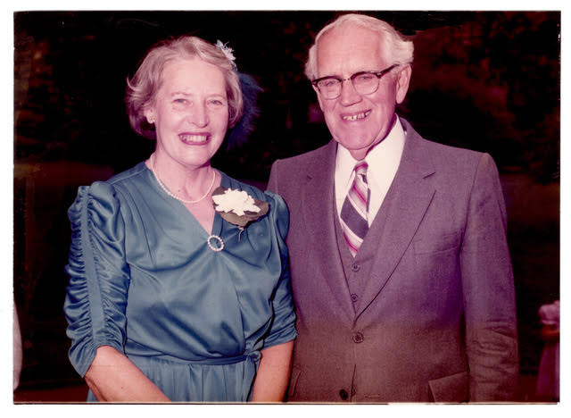

-1-MasterItem.svg)
Stories of Westminster United Church & its People / Page
228
Rob finished Grade 12 at Kelvin in Winnipeg
in 1971 and enrolled at U of T in political
science. His summer employment was in
Winnipeg in government-sponsored
educational projects. After graduation in 1975,
he spent a year in Geneva at the Graduate
Institute of International Affairs, returned to
Toronto to do an MA, then to Harvard to
study government. He joined the U of T
political science department in 1981 and
completed his PhD about two years later. He
met Gina Feldberg at Harvard, and they were
married on June 26, 1983 at Harvard Chapel.
Gina has since completed her PhD in the
history of medicine, and is on staff at York
University in Toronto.
I had the joy of performing all four weddings—in London, Winnipeg, Montreal, and Boston. Why not?
Someone asked Doug who was going to conduct his wedding. “My dad, of course. When you’ve got a
minister in the family, why pay five bucks to bring someone else in?” Indeed so!
In the spring of 1978, I told the board at Westminster that I would be retiring
in June 1979. After the
summer, a pastoral relations committee was formed, but didn’t become very active until early 1979.
They moved through the usual stages of meetings with presbytery representatives,
setting out goals,
looking at new directions. I was aware (as usually happens) of some of their
plans, but kept out of the
way as much as possible. However, by the end of May 1979, they had made their
choice—Rev. Bob
Thompson, associate with Bob Shanks at St. Andrew’s-Wesley in Vancouver.
Table
of Contents

Above: The Viponds at Reid’s retirement.